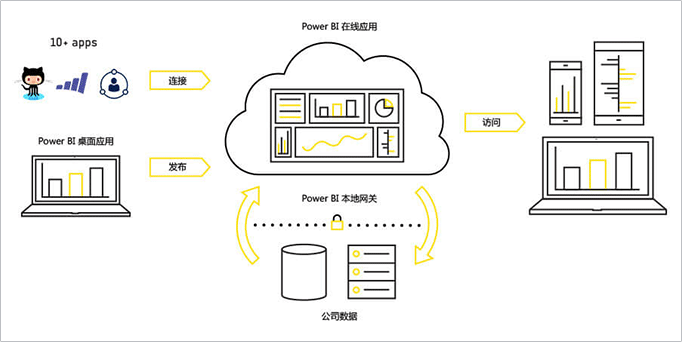

协作共赢
Office365提供用户最熟悉的灵活工
具，以便跨团队、设备和平台进行
合作
随时随地开展工作
无论你是选择联机工作还是脱机工作
，无论是使用电脑、平板电脑还是手
机，Office365总能忠诚伴你。
自信工作

通过内置的隐私、透明和精细用户
控制，可以更好地控制数据安全性
和合规性
产品特性
利用全新打造的设计、研究和校
对工具，结合键盘鼠标或触控和
数字笔，创作完美作品。
利用全新打造的设计、研究和校
对工具，结合键盘鼠标或触控和
数字笔，创作完美作品。
利用全新打造的设计、研究和校
对工具，结合键盘鼠标或触控和
数字笔，创作完美作品。
PRODUCT FUNCTION
产品功能
- Office应用程序
- 电子邮件和日历
- 在线会议
- 文件存储和共享
- 任务管理
- 视频管理
- 探索和发现
|
专属Office忠诚相伴
凭借众多Office 365 计划，可在多种设备上安装最新版本 的全部 Office 应用程序；Office 365 始终保持最新， 因此用户始终使用最新常用应用程序。 |
有条不絮的工作
根据需要，可随时随地在任意设备上（5台电脑或移动设备）开展 工作、共享文件、参加会议并与团队同步 |
时刻同步
自动联机保存文件，使用户能够随时随地访问、编辑和共享最新版文件 |
随时随地保持联系无论何处使用都保持最新Office 365 将在各种设备上实时同步电子邮件、日历和联系人信息。轻而易举安排日程共享日历，可随时查看人员的闲忙状态。日程安排无比轻松，易如反
|
让邮件新颖别致邮件独特外观创建自定义格式可让电子邮件更别具一格，加入图片可让其更具冲击力。
|
||
轻松无忧管理轻松无广告Office 365 简化的管理中心和内置安全性可减轻电子邮件管理负担，
|
无论身在何处，只要在线即可参加会议不错过任何一场会议无论何处只要在线，都可以在最近设备上参加会议，免去差旅成本和
|
效率高成效高每个人均可参与高清视频能让你与多达250位与会者共聚一处。内置协作工具一键屏幕共享和实时笔记记录总局能让每位同步。了解参会人员身份参加者都配有照片和资料，能了解参会者各种身份相关信息。 |
||
线上轻松保持联系发送即时消息点对点发送到对方，获得响应。一对一音视频通过Skype一对一进行音频或视频。可以与Skype用户沟通与使用Skype用户即时发起IM沟通。 |
| 告别团队团队工作中的混淆情形，完成更多工作！使用Microsoft Planner，你的团队可以轻松创建新计划、组织和分配任务、共享文件、讨论进行中的工作，并随时获取进度更新 | |
| 快速组织 | |
一、易于使用
只需点击一下即可从Office 365 应用启动器中启动Planner。然后就 |
二、直观方式组织工作每个计划都有自己的缺陷，可在其中将任务归入存储桶中。可按任务 |
| 协同工作 | |
一、透明度高“我的任务”视图可提供所有计划中所有任务极其状态的完整列表。 |
二、协作处理任务
Planner是针对Office 365 构建的，可用于将文件附加到任务，协作 |
| 时刻同步 | |
一、跨设备工作
Planner支持所有设备。而且利用Planner所有人始终位于同一页 |
二、电子邮件通知
利用Planner，你将时刻同步。每次向你分配新任务或将你添加到对 |
|
轻松访问视频内容 |
广泛共享构想 |
内置安全性 |
|
在新式直观的视频平台中轻松查找视频。借 |
拖放即可上传视频。随后可键入表情和描述 |
Office 365 视频提供可扩展的企业视频解决 |
|
跨整个公司查找内容和专业知识
|
|
|
发现相关
推荐内容 轻松查找
人员和内容 快速获取
正确信息 |
在新式直观的视频平台中轻松查找视频。借助Office 365 视频，员工可以使用自己的设备查找、发现和查看整个公司内的重要主题和创意。
发现并连接其他人员，了解其专业知识、项目、教育程度和联系人详细信息。通过Delven中所列出的自己的技能和兴趣以及Yammer中和会话，他人可查找并使用你的专业知识。
使用SharePoint内置的企业搜索功能，可获得经优化的相关搜索结果。轻松查看经常访问的网站以及最近查看或编辑的文件。
|
- 
-
PowerBI是基于云的商业数据分析和共享工具，
它能够帮你把复杂的数据转化成简单的视图。通
过它，你可以快速创建丰富的可视化交互式报告
，即使在外也能用手机端APP随时查看。甚至检
测公司各项业务的运行状况，只需它仪表板的一
个界面就够了。一切，就是这么简单、快捷和灵
活。
产品关键价值和优势
|
基于Office365
的内容管理和协作方式 |
数据的
的自动刷新和实时刷新 |
支持混合部署
|
|
使用自然语言
直观地查询数据 |
与Microsoft
产品完美集成 |
性价比高
|
特色功能
|
Power Query
Power Query是负责抓取和整理数据的，他可以抓取几乎市面上所有格式的数据,然后在按照我们需要的格式整理出来。通过Power Query我们可以快速
将多个数据源的数据合并、追加到一起，任意组合数据、将数据进行分组、透视等整理操作。而且这些步骤将来是自动完成的。
|
Power Pivot
Power Pivot是微软Power BI系列工具的大脑，负责建模分析。有人说它是过去20年里最好的新功能。
|
|
Power View
Power View是嵌套在Excel里的交互式图标工具，只用Excel也可以制作高大上的仪表板。
|
Power BI Online Service
Power BI Online Service是一种基于云的业务分析服务，可以为你提供最关键数据的单一视图。
|
|
Power BI Mobile
Power BI Mobile提供安卓、苹果、windows平板和手机的应用程序，可以在各大应用商店搜索Power BI下载。
|
Power BI Desktop
Power BI Desktop是用于生产分析的完善端对端解决方案，Desktop具有所有的功能，可通过Power BI快速连接、塑造、可视化和共享数据洞察力。
|